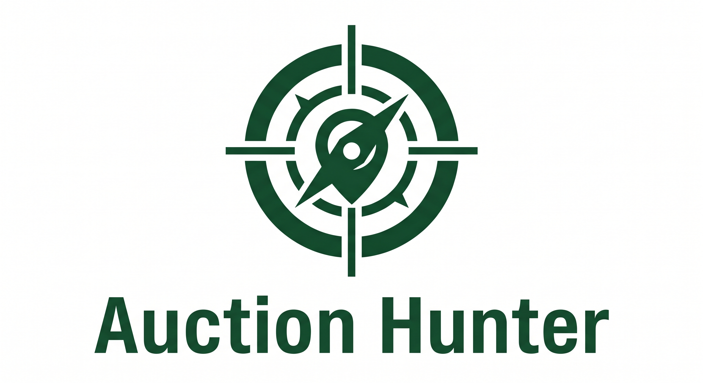

Auction HunterAuction Hunter is a free, searchable map of UK auction houses, built for antique dealers and collectors who want to find upcoming sales quickly and easily.
Every auction house on EasyLive is plotted on a map of the UK. Hover over any pin to see the house name, address, and next sale date. Click through to bid directly on EasyLive.
Auction Hunter was built by an antique dealer, for other dealers. It started as an internal tool for finding pine furniture at auction and grew into a map of every UK auction house on EasyLive. No affiliation with EasyLive or any auction house.
We're working on some exciting new tools and features for dealers and collectors — saved searches, alerts, and more. Stay tuned.
Questions or feedback? ken@auctionhunter.co.uk
Back to the map →